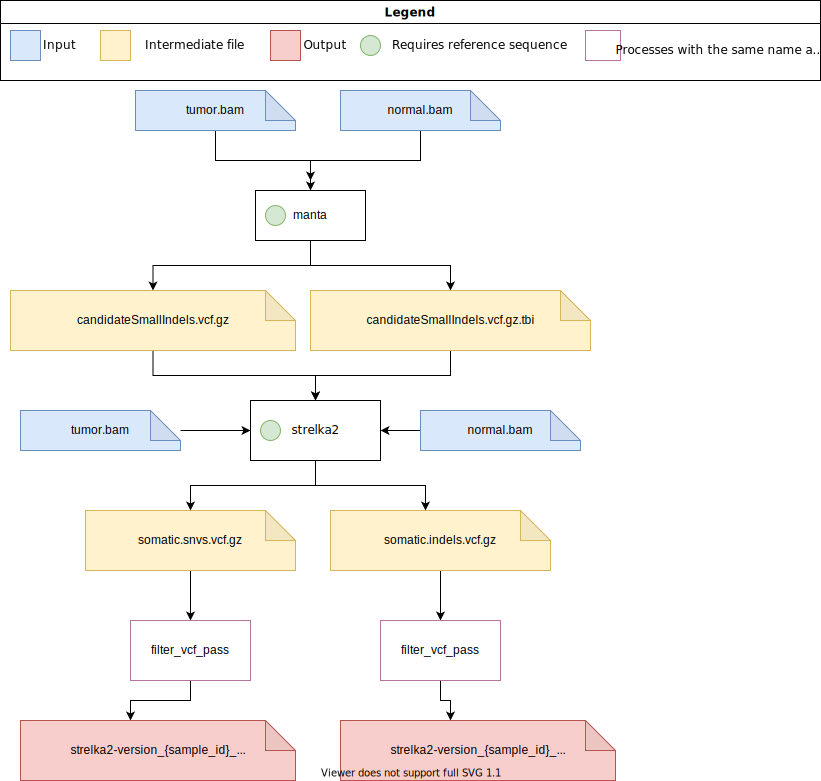

Flow Diagrams
SomaticSniper

Tools
SomaticSniper
SomaticSniper source: https://github.com/genome/somatic-sniper Version: SomaticSniper v1.0.5.0 (Released on Jul 16, 2015) GitHub Package: ghcr.io/uclahs-cds/somaticsniper:1.0.5.0
bam-readcount
bam-readcount source: https://github.com/genome/bam-readcount Version: v0.8.0 Release (Released on Oct 21, 2016) GitHub Package: ghcr.io/uclahs-cds/bam-readcount:0.8.0
Strelka2

Tools
Manta
Manta source: https://github.com/Illumina/manta Version: v1.6.0 (Released on Jul 9, 2019) GitHub Package: ghcr.io/uclahs-cds/manta:1.6.0
Strelka2
Strelka2 source: https://github.com/Illumina/strelka Version: v2.9.10 (Released on Nov 7, 2018) GitHub Package: ghcr.io/uclahs-cds/strelka2:2.9.10
Mutect 2
Tools
GATK
GATK source: https://github.com/broadinstitute/gatk Version: 4.2.4.1 (Released on Jan 4, 2022) Docker Image: broadinstitute/gatk:4.2.4.1
MuSE
Tools
MuSE
MuSE source: https://github.com/wwylab/MuSE Version: 2.0 (Released on Aug 25, 2021) GitHub Package: https://github.com/uclahs-cds/docker-MuSE/pkgs/container/muse